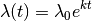

Table Of Contents
Previous topic
8. Interpreting Rate Shifts on Phylogenies

8. Interpreting Rate Shifts on Phylogenies
The primary methodological description of the BAMM model and implementation is in press in PLoS ONE. This should be out in early February 2014. In the meantime, a preprint of the manuscript is available on the arXiv preprint server:
http://arxiv.org/abs/1401.6602
This paper contains a description of the model, the reversible jump MCMC implementation, and a comprehensive performance evaluation.
Not much. There is no general rule here, but if your dataset is large enough to consider doing any other sort of diversification analysis, then it is probably large enough for BAMM. The whale diversification analysis shown in the graph gallery uses a time-calibrated tree with 89 tips. We’ve had good success using BAMM on trees that are considerably smaller than this.
We are currently testing extensions of BAMM that allow modeling evolutionary dynamics under a much greater range of phenotypic evolutionary scenarios, as well as the incorporation of paleontological data. Bleeding edge releases of BAMM can be obtained from here (link).
BAMM models the dynamics of speciation and extinction within rate regimes using an exponential change function. The speciation rate  at any point in time is modeled as
at any point in time is modeled as

where is the initial speciation rate at the start of the rate regime,  is a parameter that controls the dynamics of rate change through time, and
is a parameter that controls the dynamics of rate change through time, and  is the elapsed time since the start of the rate regime. Theoretically, a linear diversity-dependent change in speciation rates through time leaves a signal in molecular phylogenies that is virtually indistinguishable from an exponential time-dependent change in rates. Our analyses of simulated datasets suggest that these two types of models are not distinguishable in practice.
is the elapsed time since the start of the rate regime. Theoretically, a linear diversity-dependent change in speciation rates through time leaves a signal in molecular phylogenies that is virtually indistinguishable from an exponential time-dependent change in rates. Our analyses of simulated datasets suggest that these two types of models are not distinguishable in practice.
We have conducted extensive performance evaluations where we have simulated datasets under formal diversity-dependent scenarios, then used BAMM to reconstruct the number of macroevolutionary rate regimes as well as the dynamics of speciation and extinction through time. Our simulations indicate that BAMM can estimate both the number of distinct macroevolutionary regimes, as well as the underlying evolutionary rates, even though we are using the exponential approximation to the diversity-dependent process. We have published these results here (non-functional link).
It is (vastly) more efficient computationally to work with the exponential change model than the formal diversity-dependent model, and calculations of single likelihoods on phylogenies can be many orders of magnitude faster with the exponential approximation than with the formal diversity-dependent model. The multi-process explorations of macroevolutionary dynamics that are possible with BAMM wouldn’t really be feasible without the ability to quickly compute likelihoods.
As an aside, the user is encouraged to remember that all analytically tractable models of diversity-dependence (e.g., Rabosky & Lovette, Proc. R. Soc. B., 2008; or Etienne et. al., Proc. R. Soc. B, 2011) are models that we are imposing on the data: there is no reason why a true diversity-dependent process need follow a linear model.